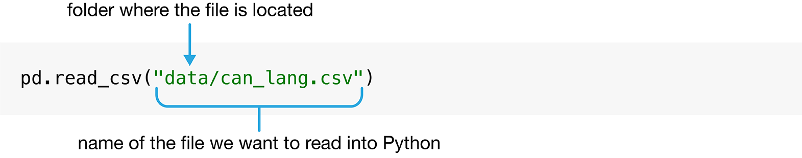
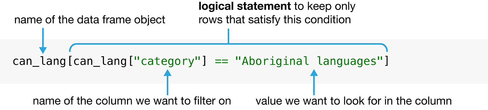
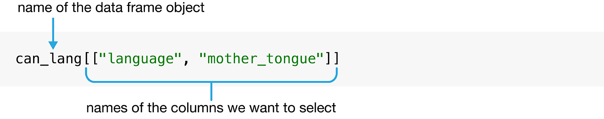
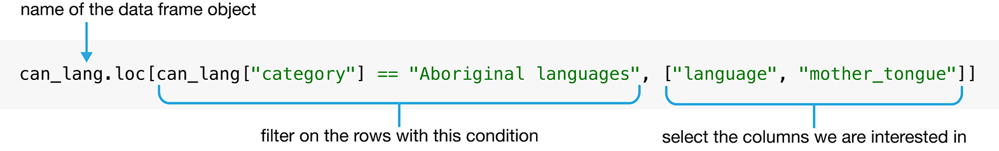
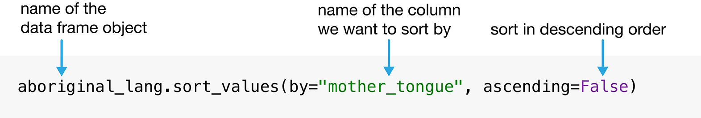
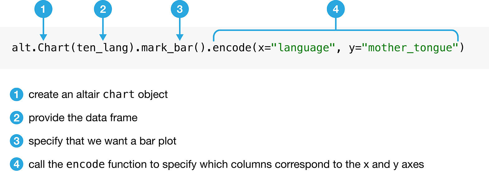
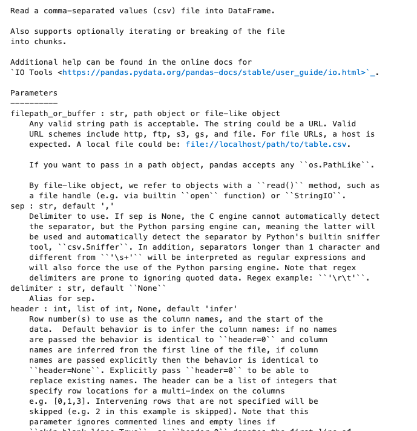
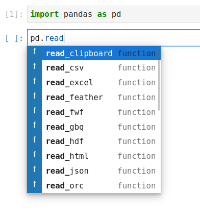
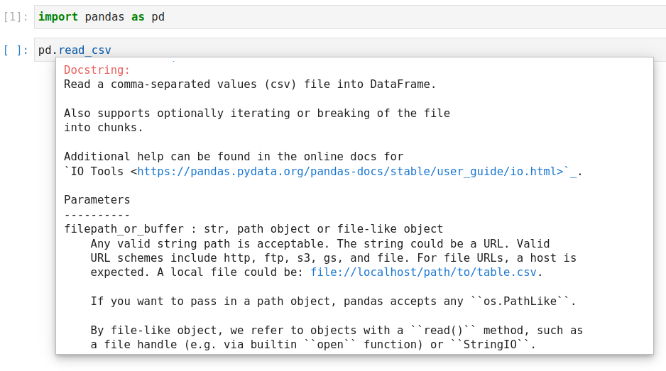

1. Python 与 Pandas#
1.1. 概述#
本章介绍数据科学与 Python 编程语言。我们的目标是让你从一开始就动手实干！我们会完整走一遍数据分析的流程，并在过程中介绍不同类型的数据分析问题、Python 中的一些基本编程概念，以及读取、清洗和可视化数据的基础知识。后续各章会逐一深入讲解这些步骤；不过现在，我们先直接上手，看看用数据科学能做多少事情！
1.2. 本章学习目标#
学完本章后，你将能够：
识别数据分析问题的不同类型，并把一个问题归入正确的类型。
把
pandas包导入 Python。用
read_csv读取表格型数据（tabular data）。使用赋值符号在 Python 中创建新的变量和对象。
使用
[]、loc[]、sort_values和head创建并整理表格型数据的子集。使用列赋值在表格型数据中添加和修改列。
把多个操作依次串联起来。
用
altair条形图可视化数据。使用
help()和?访问 Python 的帮助与文档工具。
1.3. 加拿大语言数据集#
本章会完整分析一份数据集，其中记录的是加拿大居民在家使用的语言（图 1.1）。加拿大生活着许多原住民，他们有自己的文化和语言；这些语言往往为加拿大所独有，世界上其他地方并不使用 [Statistics Canada, 2018]。令人痛心的是，殖民化导致其中许多语言消亡。例如，在加拿大的寄宿学校（residential schools）里，一代又一代儿童被禁止说自己的母语（母语是一个人幼年最先学会的语言）。殖民者还把他们“发现”的地方重新命名 [Wilson, 2018]。这类行为严重损害了加拿大原住民语言的延续，有些语言因为报告会说的人很少，已被视为“濒危”。要了解更多内容，请参看《Canadian Geographic》杂志的文章《Mapping Indigenous Languages in Canada》[Walker, 2017]、《他们为孩子而来：加拿大、原住民与寄宿学校》（They Came for the Children: Canada, Aboriginal peoples, and Residential Schools）[Truth and Reconciliation Commission of Canada, 2012]，以及加拿大真相与和解委员会（Truth and Reconciliation Commission）的《行动呼吁》（Calls to Action）[Truth and Reconciliation Commission of Canada, 2015]。
图 1.1 加拿大地图。#
本章要研究的数据集取自 canlang R 数据包 [Timbers, 2020]，其中包含 2016 年加拿大人口普查 [Statistics Canada, 2016] 收集的人口语言数据。这份数据记录了 214 种语言，每种语言有六个不同的属性：
category：更高层级的语言类别，说明该语言是加拿大官方语言、原住民（Aboriginal，即 Indigenous）语言，还是非官方且非原住民的语言。language：语言的名称。mother_tongue：报告该语言为自己母语的加拿大居民人数。母语一般定义为一个人自出生起就接触的语言。most_at_home：报告该语言为家中最常用语言的加拿大居民人数。most_at_work：报告工作中最常使用该语言的加拿大居民人数。lang_known：报告掌握该语言的加拿大居民人数。
据人口普查，在加拿大报告使用的原住民语言超过 60 种。假设我们想知道哪些语言最为常见，那么我们可能会提出下面这个问题，并希望用数据来回答它：
2016 年在加拿大被报告为母语最多的十种原住民语言是哪些，每种语言各有多少人使用？
备注
要做好数据科学，就必须深入理解数据和问题所在的领域。本书为了聚焦方法与基本概念，简化了示例中使用的数据集。但在现实生活中，没有领域专家，你无法也不应该做数据科学。换个角度说，在自己擅长的领域里做数据科学也很常见！请记住，处理数据时，务必思考数据是如何收集来的，这会影响你能得出什么结论。数据有偏差，结论就会有偏差！
1.4. 提出问题#
每一次出色的数据分析都始于一个问题——就像上面那个——你希望用数据来回答它。事实上，围绕数据的问题确实有若干不同的类型：描述性、探索性、预测性、推断性、因果性和机理性，表 1.1 给出了它们的定义 [Leek and Peng, 2015, Peng and Matsui, 2015]。在分析中尽早、审慎地提出问题——同时正确判断它属于哪一类——会决定你分析的整体思路，也会影响你选用哪些工具。
问题类型 |
说明 |
示例 |
|---|---|---|
描述性 |
针对数据集的汇总特征提问，但不作解释（即报告一个事实）。 |
加拿大各省和地区分别有多少人居住？ |
探索性 |
询问单个数据集内部是否存在模式、趋势或关系。常用于为后续研究提出假设。 |
在一份针对 2,000 名加拿大居民收集的数据中，政党投票会随财富指标变化吗？ |
预测性 |
询问如何预测个体（人或物）的测量值或标签。关注点在于哪些事物能预测某种结果，而不在于结果由什么造成。 |
在下一届加拿大选举中，某人会把票投给哪个政党？ |
推断性 |
在单个数据集中寻找模式、趋势或关系，并且还要求量化这些发现对更大人群的适用程度。 |
对全体加拿大居民而言，政党投票会随财富指标变化吗？ |
因果性 |
询问在更大人群中，改变一个因素平均而言是否会导致另一个因素发生变化。 |
在加拿大选举中，财富会导致人们投票给某个政党吗？ |
机理性 |
询问观察到的模式、趋势或关系背后的机制（即它是如何发生的？）。 |
在加拿大选举中，财富是如何导致人们投票给某个政党的？ |
本书会教你回答前四类问题的方法：描述性、探索性、预测性和推断性问题；因果性与机理性问题超出了本书的范围。具体来说，你将学会使用下面这些分析工具：
**汇总：**计算并报告数据集的汇总值。汇总最常用于回答描述性问题，偶尔也有助于回答探索性问题。例如，你可以用汇总来回答下面这个问题：*这份数据集中，跑者的平均比赛用时是多少？*汇总工具会在第 2 章和第 3 章中详细讲解，不过在全书正文中会经常用到。
**可视化：**用图形展示数据。可视化通常用于回答描述性问题和探索性问题，但在回答表 1.1 中所有类型的问题时，都起着关键的辅助作用。例如，你可以用可视化来回答下面这个问题：这份数据集中，跑者的比赛用时和年龄之间有关系吗？第 4 章会详细讲解可视化，不过它在全书中同样会经常出现。
**分类：**为一个新观测预测类别。分类用于回答预测性问题。例如，你可以用分类来回答下面这个问题：*已知某个肿瘤的平均细胞面积和周长的测量值，该肿瘤是良性的还是恶性的？*分类将在第 5 章和第 6 章中讲解。
**回归：**为一个新观测预测定量取值。回归也用于回答预测性问题。例如，你可以用回归来回答下面这个问题：*一名 20 岁、体重 50kg 的跑者，比赛用时会是多少？*回归将在第 7 章和第 8 章中讲解。
**聚类：**在数据集中找出此前未知或未标注的子组。聚类常用于回答探索性问题。例如，你可以用聚类来回答下面这个问题：*在 Amazon 上，哪些商品经常被一起购买？*聚类将在第 9 章中讲解。
**估计：**从一个大群体中取少量个体进行测量，并对该大群体的均值或比例作出合理推断。估计用于回答推断性问题。例如，你可以用估计来回答下面这个问题：*在一项针对 100 名加拿大人手机持有情况的调查中，全体加拿大人口中拥有 Android 手机的比例是多少？*估计将在第 10 章中讲解。
对照表 1.1，我们关于原住民语言的问题属于描述性问题：我们是在汇总一个数据集的各项特征，而不作进一步解释。再看一看上面的清单，看来我们应该用可视化，也许再加上一些汇总来回答这个问题。因此在本章余下的部分里，我们将着手制作一张可视化图形，展示 2016 年人口普查中加拿大最常见的十种原住民语言以及它们对应的计数。
1.5. 读入表格型数据集#
数据集从本质上说就是一组有结构的数字和字符。除此之外，其实没有什么严格的规则；数据集可以有各种不同的形式！不过，你在实践中遇到的最常见的数据集形式大概是表格型数据。想想 Microsoft Excel 里的电子表格：表格型数据呈矩形，与电子表格很像，如图 1.2 所示。本书主要关注表格型数据。
本书用 Python 做数据分析，所以第一步是把数据读入 Python。把表格型数据读入 Python 后，它会表示为一个数据框（data frame）对象。图 1.2 说明 Python 数据框与电子表格非常相似。我们把行称为观测，也就是我们收集数据所针对的各个对象。在图 1.2 中，观测就是各种语言。我们把列称为变量，也就是每个观测的特征。在图 1.2 中，变量是语言的类别、名称、母语使用者人数等。

图 1.2 Python 中的电子表格与数据框。#
我们要学的第一种数据文件是逗号分隔值格式（简称 .csv），我们会把它读入 Python 并转成数据框。这类文件的文件名以 .csv 结尾，可以用 Microsoft Excel、Google Sheets 等常见电子表格程序打开和保存。例如，名为 can_lang.csv 的 .csv 文件就随本书的代码一同提供。如果用纯文本编辑器（比如记事本这种只显示文本、不带任何格式的程序）打开这份数据，我们会看到每一行数据都单独占一行，表格中的每一项用逗号分隔：
category,language,mother_tongue,most_at_home,most_at_work,lang_known
Aboriginal languages,"Aboriginal languages, n.o.s.",590,235,30,665
Non-Official & Non-Aboriginal languages,Afrikaans,10260,4785,85,23415
Non-Official & Non-Aboriginal languages,"Afro-Asiatic languages, n.i.e.",1150,44
Non-Official & Non-Aboriginal languages,Akan (Twi),13460,5985,25,22150
Non-Official & Non-Aboriginal languages,Albanian,26895,13135,345,31930
Aboriginal languages,"Algonquian languages, n.i.e.",45,10,0,120
Aboriginal languages,Algonquin,1260,370,40,2480
Non-Official & Non-Aboriginal languages,American Sign Language,2685,3020,1145,21
Non-Official & Non-Aboriginal languages,Amharic,22465,12785,200,33670
要把这些数据读入 Python，以便对它做各种事情（例如进行分析或制作数据可视化图形），我们需要用到函数。函数是 Python 中的一个特殊单词，它接收一些指令（我们称之为参数），然后做某件事。我们用来把 .csv 文件读入 Python 的函数叫 read_csv。在最基本的用法下，read_csv 要求数据文件：
有列名，也就是表头（header），
用逗号（
,）分隔各列，并且不含行名。
下面你会看到用 read_csv 函数把数据读入 Python 的代码。请注意，read_csv 函数并不包含在 Python 的基础安装中，也就是说，安装 Python 时它并不是可以直接使用的基本函数之一。因此，你需要先把它从别处导入，然后才能使用。我们从中导入它的地方称为 Python 包。Python 包是一组函数的集合，导入之后，它们可以和 Python 内置包中的函数一起使用。具体来说，只要用 import 命令导入 Python 的 pandas 包 [The Pandas Development Team, 2020, Wes McKinney, 2010]，就能使用 read_csv 函数。pandas 包中有很多函数，本书从头到尾都会用它们来读取、清洗、整理和可视化数据。
import pandas as pd
这条命令分两部分。第一部分是 import pandas，用来导入 pandas 包；第二部分是 as pd，给 pandas 包起一个短得多的别名（即另一个名字）pd。现在只要写 pd.read_csv，就能使用 read_csv 函数，也就是先写包名，再写一个点，然后写函数名。你能看出为什么要给 pandas 起个更短的别名：如果每用一个函数都要在前面敲一遍 pandas.，代码就会变得又长又难读！
现在 pandas 包已经导入，我们只要给 read_csv 函数传入一个参数，就能使用它：文件名 "can_lang.csv"。代码中的文件名以及其他字母和单词都要加上引号，以便与构成 Python 编程语言的那些特殊单词（比如函数！）区分开。我们只需要提供文件名这一个参数，因为在默认用法下，我们的文件已经满足了 read_csv 函数要求的其他所有条件。图 1.3 说明了如何用 read_csv 把数据读入 Python。

图 1.3 read_csv 函数的语法。#
pd.read_csv("data/can_lang.csv")
| category | language | mother_tongue | most_at_home | most_at_work | lang_known | |
|---|---|---|---|---|---|---|
| 0 | Aboriginal languages | Aboriginal languages, n.o.s. | 590 | 235 | 30 | 665 |
| 1 | Non-Official & Non-Aboriginal languages | Afrikaans | 10260 | 4785 | 85 | 23415 |
| 2 | Non-Official & Non-Aboriginal languages | Afro-Asiatic languages, n.i.e. | 1150 | 445 | 10 | 2775 |
| 3 | Non-Official & Non-Aboriginal languages | Akan (Twi) | 13460 | 5985 | 25 | 22150 |
| 4 | Non-Official & Non-Aboriginal languages | Albanian | 26895 | 13135 | 345 | 31930 |
| ... | ... | ... | ... | ... | ... | ... |
| 209 | Non-Official & Non-Aboriginal languages | Wolof | 3990 | 1385 | 10 | 8240 |
| 210 | Aboriginal languages | Woods Cree | 1840 | 800 | 75 | 2665 |
| 211 | Non-Official & Non-Aboriginal languages | Wu (Shanghainese) | 12915 | 7650 | 105 | 16530 |
| 212 | Non-Official & Non-Aboriginal languages | Yiddish | 13555 | 7085 | 895 | 20985 |
| 213 | Non-Official & Non-Aboriginal languages | Yoruba | 9080 | 2615 | 15 | 22415 |
214 rows × 6 columns
1.6. 在 Python 中命名#
我们用 read_csv 读入 2016 年加拿大人口普查的语言数据时，并没有给这个数据框起名字。因此数据只是打印在屏幕上，我们无法再对它做别的事情。这样用处不大。更有用的做法，是给 read_csv 输出的数据框起一个名字，这样以后分析数据和做可视化时就能引用它。
在 Python 中给取值起名字要用赋值符号（assignment symbol），即等号 =。赋值符号左边写你想用的名字，右边写你希望这个名字指向的取值。在 Python 中，名字几乎可以用来指向任何东西，比如数字、单词（也就是由字符组成的字符串），以及数据框！下面我们把 my_number 设为 3（1+2 的结果），把 name 设为字符串 "Alice"。
my_number = 1 + 2
name = "Alice"
注意，用赋值符号 = 在 Python 中给东西命名时，不需要给要创建的名字加引号。因为我们是在明确告诉 Python，这个特殊单词代表右侧那个取值。只有赋值符号右侧充当取值的字符和单词——例如前面指定的文件名 "data/can_lang.csv"，或者上面的 "Alice"——才需要用引号括起来。
完成赋值之后，我们就可以用创建的特殊名字来代替它们对应的取值。例如，如果之后想对取值 3 做点什么，直接写 my_number 就行。我们来试着给 my_number 加上 2；你会看到 Python 把它理解为 2 加 3：
my_number + 2
5
对象名可以由字母、数字和下划线（_）组成。其他符号不行，因为它们在 Python 中各有自己的含义。例如，- 是减号；如果用 - 来命名，Python 会报错，我们就会得到一个错误！
my-number = 1
SyntaxError: cannot assign to expression here. Maybe you meant '==' instead of '='?
Python 中对对象命名有一些约定。给对象命名时，我们建议只用小写字母、数字和下划线 _ 来分隔名字中的单词。Python 区分大小写，也就是说 Letter 和 letter 在 Python 中是两个不同的对象。你还应该尽量给对象起有意义的名字。例如，你可以把一个数据框命名为 x。不过，改用 language_data 这类更有意义的名称，能帮你记住代码中每个名字代表什么。我们建议遵循 PEP 8 中列出的 PEP 8 命名约定 [Guido van Rossum, 2001]。下面我们用赋值符号，把从 read_csv 得到的 2016 年加拿大人口普查语言数据框命名为 can_lang。
can_lang = pd.read_csv("data/can_lang.csv")
等一下，这次什么都没发生！我们的数据呢？其实确实发生了事情：数据已经读入，并且现在与名字 can_lang 关联起来了。我们可以用这个名字来访问数据框，对它做各种事情。例如，只要输入数据框的名字，就会同时打印出开头几行和末尾几行。三个点（...）表示还有未打印出来的行。你还会看到，观测的个数（即行数）和变量的个数（即列数）就打印在数据框的下方（这里是 214 行、6 列）。像这样打印数据框的几行，是快速了解其中内容的好办法。
can_lang
| category | language | mother_tongue | most_at_home | most_at_work | lang_known | |
|---|---|---|---|---|---|---|
| 0 | Aboriginal languages | Aboriginal languages, n.o.s. | 590 | 235 | 30 | 665 |
| 1 | Non-Official & Non-Aboriginal languages | Afrikaans | 10260 | 4785 | 85 | 23415 |
| 2 | Non-Official & Non-Aboriginal languages | Afro-Asiatic languages, n.i.e. | 1150 | 445 | 10 | 2775 |
| 3 | Non-Official & Non-Aboriginal languages | Akan (Twi) | 13460 | 5985 | 25 | 22150 |
| 4 | Non-Official & Non-Aboriginal languages | Albanian | 26895 | 13135 | 345 | 31930 |
| ... | ... | ... | ... | ... | ... | ... |
| 209 | Non-Official & Non-Aboriginal languages | Wolof | 3990 | 1385 | 10 | 8240 |
| 210 | Aboriginal languages | Woods Cree | 1840 | 800 | 75 | 2665 |
| 211 | Non-Official & Non-Aboriginal languages | Wu (Shanghainese) | 12915 | 7650 | 105 | 16530 |
| 212 | Non-Official & Non-Aboriginal languages | Yiddish | 13555 | 7085 | 895 | 20985 |
| 213 | Non-Official & Non-Aboriginal languages | Yoruba | 9080 | 2615 | 15 | 22415 |
214 rows × 6 columns
1.7. 用 [] 和 loc[] 创建数据框的子集#
现在数据已经读入 Python，我们可以开始整理它，找出 2016 年在加拿大被报告为母语最多的十种原住民语言。具体来说，我们要构造一张表，列出 mother_tongue 列中计数最大的十种原住民语言。第一步，从 can_lang 数据中只取出对应原住民语言的那些行；第二步，只保留 language 和 mother_tongue 两列。pandas 数据框上的 [] 和 loc[] 操作正好能帮上忙。[] 可以取数据框行的一个子集（即筛选），也可以取数据框列的一个子集（即选取）。loc[] 操作则允许你同时筛选行并选取列。我们先考察用 [] 操作筛选行和选取列，然后在原住民语言数据的分析中用 loc[] 一次完成这两件事。
备注
pandas 中的 [] 和 loc[] 操作，以及与之相关的操作，远比本章描述的强大。以后你会学到更精细的数据框索引方法，见第 3 章。
1.7.1. 用 [] 筛选行#
观察上面的 can_lang 数据，可以看到 category 列包含几种高层级的语言类别，其中有“原住民语言”（Aboriginal languages）、“非官方且非原住民语言”（Non-Official & Non-Aboriginal languages）和“官方语言”（Official languages）。要回答我们的问题，就得筛选这份数据集，把注意力限制在属于“原住民语言”这一类别的语言上。
我们可以用 [] 操作，从数据框中取出具有所需取值的那部分行。图 1.4 给出了用 [] 操作筛选行时要用的语法。先写数据框的名字——这里是 can_lang——再写一对方括号。方括号里面写筛选行时要用的逻辑表达式（logical statement）。逻辑表达式会对数据框中的每一行求值，结果是 True 或 False；[] 操作只保留逻辑表达式取值为 True 的那些行。例如，在我们的分析中，我们只想保留属于 "Aboriginal languages" 这个高层级类别的语言。可以用相等运算符（equivalency operator）== 把 category 列的取值——记作 can_lang["category"]——与取值 "Aboriginal languages" 作比较。你在第 3 章中还会学到许多其他类型的逻辑表达式。之前读取数据文件时，我们给文件名加了引号；这里同样要给 "Aboriginal languages" 和 "category" 都加上引号。加引号是告诉 Python，这是一个字符串取值（例如列名或文字数据），而不是构成 Python 编程语言的那些特殊单词，也不是我们在已经写过的代码中给对象起的名字。
备注
在 Python 中，单引号（'）和双引号（"）通常没有区别。所以上面的 "Aboriginal languages" 也可以写成 'Aboriginal languages'，"category" 也可以写成 'category'。你自己把两种写法都试一下吧！

图 1.4 用 [] 操作筛选行的语法。#
该操作返回的数据框包含输入数据框的全部列，但只保留逻辑表达式中指定的那些原住民语言对应的行。
can_lang[can_lang["category"] == "Aboriginal languages"]
| category | language | mother_tongue | most_at_home | most_at_work | lang_known | |
|---|---|---|---|---|---|---|
| 0 | Aboriginal languages | Aboriginal languages, n.o.s. | 590 | 235 | 30 | 665 |
| 5 | Aboriginal languages | Algonquian languages, n.i.e. | 45 | 10 | 0 | 120 |
| 6 | Aboriginal languages | Algonquin | 1260 | 370 | 40 | 2480 |
| 12 | Aboriginal languages | Athabaskan languages, n.i.e. | 50 | 10 | 0 | 85 |
| 13 | Aboriginal languages | Atikamekw | 6150 | 5465 | 1100 | 6645 |
| ... | ... | ... | ... | ... | ... | ... |
| 191 | Aboriginal languages | Thompson (Ntlakapamux) | 335 | 20 | 0 | 450 |
| 195 | Aboriginal languages | Tlingit | 95 | 0 | 10 | 260 |
| 196 | Aboriginal languages | Tsimshian | 200 | 30 | 10 | 410 |
| 206 | Aboriginal languages | Wakashan languages, n.i.e. | 10 | 0 | 0 | 25 |
| 210 | Aboriginal languages | Woods Cree | 1840 | 800 | 75 | 2665 |
67 rows × 6 columns
1.7.2. 用 [] 选取列#
我们也可以用 [] 操作从数据框中选取列。图 1.5 给出了选取列所需的语法。同样先写数据框的名字——这里是 can_lang——再写一对方括号。方括号里面给出一个列名组成的列表（list）。在 Python 中，我们用方括号表示列表，其中每个元素用逗号（,）分隔。因此，如果只想从原来的 can_lang 数据框中选取 language 和 mother_tongue 两列，就把包含这两个列名的列表 ["language", "mother_tongue"] 放进 [] 操作的方括号中。

图 1.5 用 [] 操作选取列的语法。#
该操作返回的数据框包含输入数据框的全部行，但只保留我们在选取列表中写出的那些列。
can_lang[["language", "mother_tongue"]]
| language | mother_tongue | |
|---|---|---|
| 0 | Aboriginal languages, n.o.s. | 590 |
| 1 | Afrikaans | 10260 |
| 2 | Afro-Asiatic languages, n.i.e. | 1150 |
| 3 | Akan (Twi) | 13460 |
| 4 | Albanian | 26895 |
| ... | ... | ... |
| 209 | Wolof | 3990 |
| 210 | Woods Cree | 1840 |
| 211 | Wu (Shanghainese) | 12915 |
| 212 | Yiddish | 13555 |
| 213 | Yoruba | 9080 |
214 rows × 2 columns
1.7.3. 用 loc[] 筛选行并选取列#
[] 操作只用于筛选行或选取列，不能同时完成这两件事。但要回答本章最初的数据分析问题，我们必须既按原住民语言筛选行，又选取 language 和 mother_tongue 两列。好在 pandas 提供了 loc[] 操作，可以一次做到。它的语法和我们刚讲过的 [] 操作很像：本质上就是把前面的行筛选和列选取两步合在一起。具体来说，先写数据框的名字——还是 can_lang——后面接 .loc[] 操作。方括号里面，先写用于筛选行的逻辑表达式，然后写一个逗号，再写要选取的列组成的列表。

图 1.6 用 loc[] 操作筛选行并选取列的语法。#
aboriginal_lang = can_lang.loc[can_lang["category"] == "Aboriginal languages", ["language", "mother_tongue"]]
这段代码里有一点很重要，需要留意。第一，我们在 can_lang 数据框上使用 loc[] 操作时写的是 can_lang.loc[]——先写数据框名，再写一个点，然后写 loc[]。又是这个点！回想一下，本章前面我们用过 pandas 中的 read_csv 函数（别名为 pd），当时写的是 pd.read_csv。点表示左边的东西（pd，即 pandas 包）提供右边的东西（read_csv 函数）。在 can_lang.loc[] 这个例子里，左边的东西（can_lang 数据框）提供右边的东西（loc[] 操作）。在 Python 中，包（比如 pandas）和对象（比如我们的 can_lang 数据框）都可以提供函数和其他对象，我们用点语法（dot syntax）来访问它们。
备注
关于术语的一点说明：当对象 obj 用点语法提供函数 f 时（如 obj.f()），我们有时把函数 f 称为 obj 的方法，或者说成 obj 上的操作。类似地，当对象 obj 用点语法提供另一个对象 x 时（如 obj.x），我们有时把对象 x 称为 obj 的属性。本书会一直使用这些术语，你在社区里也会经常看到它们。另外，程序员似乎总喜欢无缘无故地把人搞糊涂：指代来自包（比如 pandas）的函数和对象时，我们不用“方法”“操作”“属性”这些术语。例如，pd.read_csv 通常就只被称为函数，而不叫方法或操作，尽管它也用点语法。
到这一步，如果前面都做对了，aboriginal_lang 应该是一个数据框，其中只包含 category 为 "Aboriginal languages" 的行，并且只包含 language 和 mother_tongue 两列。在数据分析中每走一步，最好都把结果打印出来检查一下。
aboriginal_lang
| language | mother_tongue | |
|---|---|---|
| 0 | Aboriginal languages, n.o.s. | 590 |
| 5 | Algonquian languages, n.i.e. | 45 |
| 6 | Algonquin | 1260 |
| 12 | Athabaskan languages, n.i.e. | 50 |
| 13 | Atikamekw | 6150 |
| ... | ... | ... |
| 191 | Thompson (Ntlakapamux) | 335 |
| 195 | Tlingit | 95 |
| 196 | Tsimshian | 200 |
| 206 | Wakashan languages, n.i.e. | 10 |
| 210 | Woods Cree | 1840 |
67 rows × 2 columns
可以看到，原来的 can_lang 数据集有 214 行，包含多种 category。数据框 aboriginal_lang 只有 67 行，而且看起来只包含原住民语言。看来 loc[] 操作给出的正是我们想要的结果！
1.8. 用 sort_values 和 head 按排序后的取值选取行#
我们已经用数据框上的 [] 和 loc[] 操作，得到了只含数据集中原住民语言及其对应计数的表。不过，我们想知道使用最频繁的十种语言。下一步，我们把 mother_tongue 列从大到小排序，然后只取出最前面的十行。sort_values 和 head 两个函数正好来救场！
sort_values 函数可以按某一列的取值给数据框的行排序。要排序的列名通过参数 by 传给函数。我们想选出被报告为母语最多的十种原住民语言，所以用 sort_values 函数按 mother_tongue 列给 selected_lang 数据框的行排序。我们要按降序（从大到小）排列，因此把参数 ascending 设为 False。

图 1.7 用 sort_values 按降序排列行的语法。#
arranged_lang = aboriginal_lang.sort_values(by="mother_tongue", ascending=False)
arranged_lang
| language | mother_tongue | |
|---|---|---|
| 40 | Cree, n.o.s. | 64050 |
| 89 | Inuktitut | 35210 |
| 138 | Ojibway | 17885 |
| 137 | Oji-Cree | 12855 |
| 48 | Dene | 10700 |
| ... | ... | ... |
| 32 | Cayuga | 45 |
| 176 | Southern East Cree | 45 |
| 179 | Squamish | 40 |
| 90 | Iroquoian languages, n.i.e. | 35 |
| 206 | Wakashan languages, n.i.e. | 10 |
67 rows × 2 columns
接下来，我们只选取 arranged_lang 数据框的前十行，就能得到最常见的十种原住民语言。这一步用 head 函数完成，并把参数指定为 10。
ten_lang = arranged_lang.head(10)
ten_lang
| language | mother_tongue | |
|---|---|---|
| 40 | Cree, n.o.s. | 64050 |
| 89 | Inuktitut | 35210 |
| 138 | Ojibway | 17885 |
| 137 | Oji-Cree | 12855 |
| 48 | Dene | 10700 |
| 125 | Montagnais (Innu) | 10235 |
| 119 | Mi'kmaq | 6690 |
| 13 | Atikamekw | 6150 |
| 149 | Plains Cree | 3065 |
| 180 | Stoney | 3025 |
1.9. 添加和修改列#
回想一下，我们的数据分析问题问的是：报告说得最多的前十种原住民语言，每种语言各有多少加拿大居民把它当作母语；ten_lang 数据框里确实有这些计数……不过，看到这些数字，我们也许会对每个计数对应加拿大人口的百分比感到好奇。回答第一个问题时，常常又会冒出新的数据分析问题——所以别害怕，尽管去探索！为了顺便回答这个小问题，我们要用 mother_tongue 列中的每个计数除以 2016 年人口普查得到的加拿大总人口——即 35,151,728——再乘以 100。这个计算可以写成 100 * ten_lang["mother_tongue"] / canadian_population。然后，要把结果存进一个新列（或覆盖已有的列），就先写出要新建的列名（要修改的旧列名），再写赋值符号 =，最后写要存入该列的计算式。这里我们选择新建一列，命名为 mother_tongue_percent。
备注
下面你会看到，我们在 Python 里把加拿大人口写成 35_151_728。下划线（_）只是为了便于阅读，并不影响 Python 对这个数字的解释。换句话说，在 Python 中 35151728 和 35_151_728 完全等价，不过后者清楚得多！
canadian_population = 35_151_728
ten_lang["mother_tongue_percent"] = 100 * ten_lang["mother_tongue"] / canadian_population
ten_lang
| language | mother_tongue | mother_tongue_percent | |
|---|---|---|---|
| 40 | Cree, n.o.s. | 64050 | 0.182210 |
| 89 | Inuktitut | 35210 | 0.100166 |
| 138 | Ojibway | 17885 | 0.050879 |
| 137 | Oji-Cree | 12855 | 0.036570 |
| 48 | Dene | 10700 | 0.030439 |
| 125 | Montagnais (Innu) | 10235 | 0.029117 |
| 119 | Mi'kmaq | 6690 | 0.019032 |
| 13 | Atikamekw | 6150 | 0.017496 |
| 149 | Plains Cree | 3065 | 0.008719 |
| 180 | Stoney | 3025 | 0.008606 |
ten_lang_percent 数据框表明，ten_lang 数据框中的十种原住民语言，作为母语使用的人数占加拿大人口的 0.008% 到 0.18%。
1.10. 用链式调用和多行表达式合并步骤#
为了找出 2016 年在加拿大被报告为母语最多的十种原住民语言，我们用了 3 步。从 can_lang 数据框出发，我们：
用
loc筛选行，只留下Aboriginal languages类别，并选取language和mother_tongue两列，2) 用sort_values按mother_tongue降序排列这些行，并且 3) 用head只取前 10 个取值。
完成这些步骤的一种做法，就是直接写多行代码，边走边把中间结果存成临时对象。
aboriginal_lang = can_lang.loc[can_lang["category"] == "Aboriginal languages", ["language", "mother_tongue"]]
arranged_lang_sorted = aboriginal_lang.sort_values(by="mother_tongue", ascending=False)
ten_lang = arranged_lang_sorted.head(10)
你可能觉得这段代码不好读。你没说错，确实不好读！可读性上主要有两个问题。第一，每一行代码都很长。很难看清到底调用了哪些方法、用了哪些参数。第二，每一行都引入一个新的临时对象。这里 aboriginal_lang 和 arranged_lang_sorted 都只是通往 ten_lang 数据框途中的临时结果。这样一来，代码既难读——因为得一步步追查每个临时对象去了哪里，也难懂——因为命名了很多对象，会让人以为它们很重要，其实它们只是中间产物。处理数据框时往往需要依次调用多个方法，所以这个问题很值得解决！
要解决第一个问题，我们可以把上面那些很长的表达式拆到多行。在大多数情况下，Python 中的一个表达式必须写在一行代码里，只有少数几种情形允许我们这样做。接下来我们用多行表达式（multiline expression）把这段代码改写成更好读的形式。
aboriginal_lang = can_lang.loc[
can_lang["category"] == "Aboriginal languages",
["language", "mother_tongue"]
]
arranged_lang_sorted = aboriginal_lang.sort_values(
by="mother_tongue",
ascending=False
)
ten_lang = arranged_lang_sorted.head(10)
这段代码和前面展示的代码一样；可以看到，方法和参数的顺序完全相同。只是当表达式本来会变得又长又难读时，就把它拆到多行，从而提高代码的可读性。Python 怎么知道一个表达式还没写完、要接着读下一行呢？对于以 aboriginal_lang = ... 开头的那一行，Python 看到这行以左方括号符号 [ 结尾，就知道除非用对应的右方括号符号 ] 把它闭合，否则这个表达式不会结束。我们放的两个参数和之前一样，对应的右方括号出现在 ["language", "mother_tongue"] 之后）。对于以 arranged_lang_sorted = ... 开头的那一行，Python 看到这行以左圆括号符号 ( 结尾，就知道除非用对应的右圆括号符号 ) 把它闭合，否则这个表达式不会结束。这里用的两个参数同样和之前一样，对应的右圆括号就出现在 ascending=False 后面。这两种情况下，Python 都会继续读下一行，弄清楚表达式的其余部分是什么。当然，我们也可以把全部代码写在一行里，但拆到多行对代码可读性帮助很大。
还有一个问题要处理：每一行代码——也就是分析中的每一步——都会引入一个新的临时对象。要解决它，我们可以把多个操作链在一起，而不给中间对象赋值。链式调用（chaining）的关键在于，分析中每一步的输出都是一个数据框，因此你可以直接对每一步的输出来继续调用方法，一环接一环！这样代码更简洁，也更好读。下面的代码同时演示了多行表达式和链式调用。代码现在清爽多了，得到的 ten_lang 数据框与上面那段凌乱代码的结果完全等价！
# obtain the 10 most common Aboriginal languages
ten_lang = (
can_lang.loc[
can_lang["category"] == "Aboriginal languages",
["language", "mother_tongue"]
]
.sort_values(by="mother_tongue", ascending=False)
.head(10)
)
ten_lang
| language | mother_tongue | |
|---|---|---|
| 40 | Cree, n.o.s. | 64050 |
| 89 | Inuktitut | 35210 |
| 138 | Ojibway | 17885 |
| 137 | Oji-Cree | 12855 |
| 48 | Dene | 10700 |
| 125 | Montagnais (Innu) | 10235 |
| 119 | Mi'kmaq | 6690 |
| 13 | Atikamekw | 6150 |
| 149 | Plains Cree | 3065 |
| 180 | Stoney | 3025 |
我们把这段新代码逐块拆开来看。上面的代码以左圆括号 ( 开头，因此 Python 知道要一直读到后面的行，直到找到对应的右圆括号符号 )。loc 方法和之前一样完成筛选和选取。接下来的一行以句点（.）开头，它把 loc 这一步的输出与下一个操作 sort_values 链起来。既然 loc 的输出是一个数据框，我们就可以直接在它上面调用 sort_values 方法，而不必先给它起名字！下一行中的 .sort_values 做的正是这件事。最后，我们再次把 sort_values 的输出与 head 链在一起，以取得最常见的 10 种语言。最后，与最开头那个左圆括号对应的右圆括号 ) 出现在倒数第二行，整个多行表达式就此完成。链式调用不再创建中间对象，而是把一步操作的输出拿去做下一步操作。这样就省去了创建和存储中间对象的必要，代码因此更简洁，可读性也更好。
我们已经把链式调用作为存储临时对象和组合代码之外的另一种选择介绍给你了。那么，是不是就绝不该存储临时对象或组合代码呢？未必！有些时候，保留临时对象很方便。例如，你可以先把结果存成临时对象，再把它传给绘图函数，这样就可以反复调整图形，而不必把前面的数据变换全部重做一遍。把许多函数链在一起可能让人吃不消，也不容易调试；你可能希望在中途把结果存成临时对象，检查一下再继续后面的步骤。
1.11. 用可视化探索数据#
ten_lang 这张表回答了最初的数据分析问题。我们做完了吗？还没有。表格几乎从来都不是把分析结果呈现给受众的最好方式。即使 ten_lang 只有两列，也还是有些不方便：比如，你得凑近了仔细看，才能大致感觉出各语言使用人数的相对多少。分析变得更复杂时，这个问题只会更严重。相比之下，可视化能以容易理解得多的方式传达这些信息。可视化是汇总信息的利器，能帮你有效地与受众沟通；做出有效的数据可视化，是任何数据分析都不可缺少的一环。本节我们要为 2016 年在加拿大被报告为母语最多的十种原住民语言，以及每种语言的使用人数，制作一张可视化图形。
1.11.1. 用 altair 创建条形图#
在这份数据集中，language 和 mother_tongue 分别位于不同的列（也就是变量），而且每种语言占一行（也就是一个观测）。所以，这份数据属于我们所说的整洁数据（tidy data）格式。整洁数据是一个基本概念，也是本书余下部分的重要主题：pandas 中的许多函数都要求数据是整洁的，我们马上要用来做可视化的 altair 包也是如此。我们会在第 3 章中正式介绍整洁数据。
我们要用条形图把数据可视化。条形图的条形长度表示某些取值，比如计数或比例。我们用 ten_lang 数据框中的 mother_tongue 和 language 两列做一张条形图。要用 altair 包为这两个变量画条形图，必须指明用哪个数据框、把哪些变量放在 x 轴和 y 轴上，以及要画哪种图。第一步，先导入 altair 包。
import altair as alt
altair 中最基本的对象是 Chart，它接收一个数据框作为参数：alt.Chart(ten_lang)。有了图形对象之后，就可以指定希望怎样可视化数据。先说明用什么图形标记来表示数据。这里我们用 Chart.mark_bar 函数设置图形对象的标记属性，因为要画的是条形图。接下来，我们需要用 x 和 y 编码通道（encoding channel）来编码数据框中的变量（它们分别表示各个点在 x 轴和 y 轴上的位置）。这用 encode() 函数完成：我们指定 language 列对应 x 轴，mother_tongue 列对应 y 轴。

图 1.8 用 altair 制作条形图的语法。#
barplot_mother_tongue = (
alt.Chart(ten_lang).mark_bar().encode(x="language", y="mother_tongue")
)
alt.Chart(...)
图 1.9 加拿大居民最常报告为母语的十种原住民语言的条形图。#
1.11.2. 设置 altair 图表的格式#
我们已经能给数据做可视化，用来帮助回答自己的问题，这当然令人兴奋，不过我们的工作还没有做完！我们还能（也应该）做更多事情，提升自己所创建数据可视化的可解释性。例如，Python 默认把列名当作坐标轴标签。而这些列名通常并没有提供足够的信息来说明列中的变量。我们真该把这个默认标签换成信息量更大的标签。在上面的例子里，Python 把列名 mother_tongue 用作 y 轴标签，但多数人并不知道那是什么意思；即便他们知道，也不知道这个变量是如何测量的，更不知道测量对象是哪些人。如果坐标轴标签写成“Mother Tongue (Number of Canadian Residents)”，信息量就大得多。为了让代码更易读，我们把它拆成多行来写，就像上一节使用 pandas 时那样。
给我们在 altair 中创建的图形添加更多标签，是改进和完善数据可视化的一种常见而简便的做法。我们可以用 alt.X 和 alt.Y 配合 title 方法为 altair 对象的坐标轴添加标题，让轴标题包含更多信息（关于 alt.X 和 alt.Y 的更多内容，见第 4 章）。同样，由于我们是把文字（例如 "Mother Tongue (Number of Canadian Residents)"）作为参数传给 title 方法，所以要用引号把它们括起来。我们还能做许多其他修改来进一步设置图形的格式，这些内容将在第 4 章中介绍。
barplot_mother_tongue = alt.Chart(ten_lang).mark_bar().encode(
x=alt.X("language").title("Language"),
y=alt.Y("mother_tongue").title("Mother Tongue (Number of Canadian Residents)")
)
alt.Chart(...)
图 1.10 加拿大居民最常报告为母语的十种原住民语言的条形图，其中标注了 x 轴和 y 轴标签。注意，这个可视化还没有完成，仍有需要改进的地方。#
结果见图 1.10。这已经是相当大的改进了！接下来处理图 1.10 中可视化的下一个主要问题：竖直方向的 x 轴标签目前让人很难读清各个语言名称。一个解决办法是旋转图形，让条形变成水平方向，而不是竖直方向。为此，我们把 x 轴和 y 轴对调：
barplot_mother_tongue_axis = alt.Chart(ten_lang).mark_bar().encode(
x=alt.X("mother_tongue").title("Mother Tongue (Number of Canadian Residents)"),
y=alt.Y("language").title("Language")
)
alt.Chart(...)
图 1.11 加拿大居民最常报告为母语的十种原住民语言的水平条形图。这个可视化已经没有严重问题，但还可以进一步打磨。#
如图 1.11 所示，我们又向前迈了一大步！这个可视化已经没有严重问题了。现在该对图形做进一步打磨，让它更适合回答我们在本章前面提出的问题。例如，如果按报告每种语言的加拿大居民人数来排列条形，而不是按字母顺序排列，图形就会更容易读懂。我们可以用 sort 方法重新排列条形，它根据变量（mother_tongue）在 x-axis 上的取值，给变量（这里是 language）排序。
ordered_barplot_mother_tongue = alt.Chart(ten_lang).mark_bar().encode(
x=alt.X("mother_tongue").title("Mother Tongue (Number of Canadian Residents)"),
y=alt.Y("language").sort("x").title("Language")
)
alt.Chart(...)
图 1.12 加拿大居民最常报告为母语的十种原住民语言的条形图，其中的条形已重新排列。#
图 1.12 为我们最初的问题提供了非常清晰、条理分明的答案：根据 2016 年加拿大人口普查，我们可以看到最常报告的原住民语言是哪十种，以及每种语言有多少人使用。例如，可以看到最常报告的原住民语言是 Cree n.o.s.，有超过 60,000 名加拿大居民把它报告为母语。
备注
“n.o.s.”表示“not otherwise specified”（未另行指明），所以 Cree n.o.s. 指的是那些把母语报告为克里语（Cree）的人。在这个数据集中，克里语各语言包含以下类别：Cree n.o.s.、Swampy Cree、Plains Cree、Woods Cree，以及一个“Cree not included elsewhere”（未在别处列出）类别（该类别包含 Moose Cree、Northern East Cree 和 Southern East Cree）[Statistics Canada, 2016]。
1.11.3. 融会贯通#
下面这段代码把本章的全部内容整合到一起，并做了几处改动。具体来说，我们把所有步骤合并成一个表达式，并用左右圆括号符号 ( 和 ) 把它拆成多行书写。我们还用井号 # 在下面许多代码行旁边写了注释。Python 遇到 # 号时，会忽略该行中这个符号之后的所有文字。因此你可以用注释向别人解释代码，而且也许更重要的是，向未来的自己解释！养成给代码写注释的习惯能提高代码的可读性，这是很好的做法。
这个练习展示了 Python 的强大之处。我们只用了相对很少的几行代码，就完成了一整套数据科学工作流，还做出了效果很好的数据可视化！我们提出了问题，把数据读入 Python，整理了数据（用到 []、loc[]、sort_values 和 head），并创建数据可视化来帮助回答这个问题。本章让你初步体验了数据科学工作流；请继续学习后面几章，更深入地了解其中的每一个步骤！
# load the data set
can_lang = pd.read_csv("data/can_lang.csv")
# obtain the 10 most common Aboriginal languages
ten_lang = (
can_lang.loc[can_lang["category"] == "Aboriginal languages", ["language", "mother_tongue"]]
.sort_values(by="mother_tongue", ascending=False)
.head(10)
)
# create the visualization
ten_lang_plot = alt.Chart(ten_lang).mark_bar().encode(
x=alt.X("mother_tongue").title("Mother Tongue (Number of Canadian Residents)"),
y=alt.Y("language").sort("x").title("Language")
)
alt.Chart(...)
图 1.13 加拿大居民最常报告为母语的十种原住民语言的条形图。#
1.12. 查阅文档#
pandas 包（以及其他包！）里的 Python 函数非常多，没有人能记住每一个函数的作用，也记不住我们必须传给它们的全部参数。好在 Python 提供了 help 函数，可以方便地快速调出大多数函数的文档。要用 help 函数查阅文档，只需把你感兴趣的函数名作为参数放进 help 函数即可。例如，如果你忘了 pd.read_csv 函数做什么，或者忘了到底该传入哪些参数，就可以运行下面的代码：
help(pd.read_csv)
图 1.14 展示了将会弹出的文档，其中包括函数的高层描述、它的参数、每个参数的说明，等等。注意，你现在可能会觉得文档里有些文字过于专业。别担心：随着你一步步读完本书，这些术语中有许多都会陆续介绍给你，你会慢慢变得更善于理解和查阅像图 1.14 那样的文档。不过请记住，文档并不是为了教你某个函数而写的，它只是一个参考，用来提醒你已经从别处学过的函数的各种参数和用法。
{kind=link}

图 1.14 read_csv 函数的文档，其中包括高层描述、参数列表及每个参数的含义，等等。#
如果你在 JupyterLab 环境中工作，还有一些便利功能可以帮助你查找函数名、查阅文档。首先，除了 help，你还可以使用更简洁的 ? 字符。例如，想查看 pd.read_csv 函数的文档，可以运行下面的代码：
?pd.read_csv
你也可以先输入想用的函数的前几个字符，然后按 Tab 键，就会弹出一个小菜单，列出所有以这些字符开头的可用函数。这既有助于记住函数名，也能防止输入错误。
{kind=link}

图 1.15 输入 pd.read 并按下 Tab 键后显示的建议列表。#
想进一步了解要使用的函数，你可以输入完整名称，然后按住 Shift 不放再按 Tab，就会弹出帮助对话框，其中包含的信息与使用 help() 时相同。
{kind=link}

图 1.16 输入 pd.read_csv 后再按 Shift + Tab 所显示的帮助对话框。#
最后，让这个帮助对话框一直开着会很有用，尤其是在你刚开始学习编程和数据科学的时候。要做到这一点，可以点击顶部菜单栏中的 Help，然后选择 Show Contextual Help。
1.13. 习题#
本章内容的练习题可以在配套的练习册仓库中“Python and Pandas”那一行找到。点击“查看练习册”（view worksheet）即可预览本章练习册的非交互版本。如果想以交互方式做这些习题，请按练习册仓库中的说明下载所有练习册，并按照第 13 章中给出的计算机配置说明操作。这样才能保证练习册提供的自动反馈和指导按预期工作。
1.14. 参考文献#
- GvR01
Nick Coghlan Guido van Rossum, Barry Warsaw. PEP 8 – Style Guide for Python Code. 2001. URL: https://peps.python.org/pep-0008/.
- LP15
Jeffrey Leek and Roger Peng. What is the question? Science, 347(6228):1314–1315, 2015.
- PM15
Roger D Peng and Elizabeth Matsui. The Art of Data Science: A Guide for Anyone Who Works with Data. Skybrude Consulting, LLC, 2015. URL: https://bookdown.org/rdpeng/artofdatascience/.
- Tim20
Tiffany Timbers. canlang: Canadian Census language data. 2020. R package version 0.0.9. URL: https://ttimbers.github.io/canlang/.
- Wal17
Nick Walker. Mapping indigenous languages in Canada. Canadian Geographic, 2017. URL: https://www.canadiangeographic.ca/article/mapping-indigenous-languages-canada (visited on 2021-05-27).
- Wil18
Kory Wilson. Pulling Together: Foundations Guide. BCcampus, 2018. URL: https://opentextbc.ca/indigenizationfoundations/ (visited on 2021-05-27).
- StatisticsCanada16a
Statistics Canada. Population census. 2016. URL: https://www12.statcan.gc.ca/census-recensement/2016/dp-pd/index-eng.cfm.
- StatisticsCanada16b
Statistics Canada. The Aboriginal languages of First Nations people, Métis and Inuit. 2016. URL: https://www12.statcan.gc.ca/census-recensement/2016/as-sa/98-200-x/2016022/98-200-x2016022-eng.cfm.
- StatisticsCanada18
Statistics Canada. The evolution of language populations in Canada, by mother tongue, from 1901 to 2016. 2018. URL: https://www150.statcan.gc.ca/n1/pub/11-630-x/11-630-x2018001-eng.htm (visited on 2021-05-27).
- ThePDTeam20
The Pandas Development Team. pandas-dev/pandas: Pandas. February 2020. URL: https://doi.org/10.5281/zenodo.3509134, doi:10.5281/zenodo.3509134.
- TruthaRCoCanada12
Truth and Reconciliation Commission of Canada. They Came for the Children: Canada, Aboriginal Peoples, and the Residential Schools. Public Works & Government Services Canada, 2012.
- TruthaRCoCanada15
Truth and Reconciliation Commission of Canada. Calls to Action. 2015. URL: https://www2.gov.bc.ca/assets/gov/british-columbians-our-governments/indigenous-people/aboriginal-peoples-documents/calls_to_action_english2.pdf.
- WesMcKinney10
Wes McKinney. Data Structures for Statistical Computing in Python. In Stéfan van der Walt and Jarrod Millman, editors, Proceedings of the 9th Python in Science Conference, 56 – 61. 2010. doi:10.25080/Majora-92bf1922-00a.